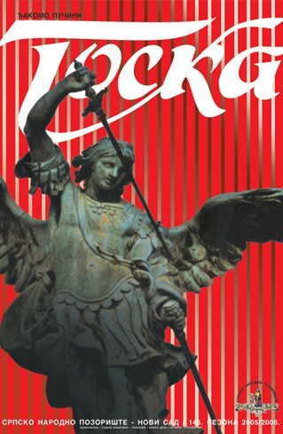
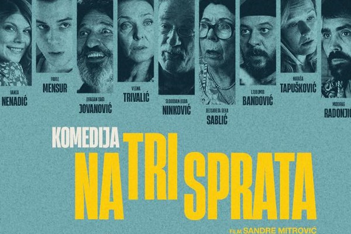
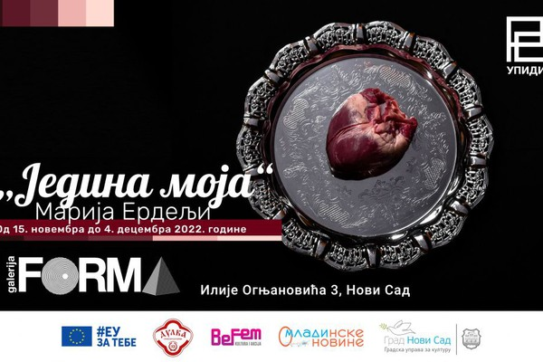

Događaji
Predstava
Srpsko Narodno Pozorište
19:00 - Scena: Jovan Đorđević
Đakomo Pučini
TOSKA
opera u tri čina
Libreto prema drami V. Sardua
napisali L. Ilika i Đ. Đakoza
Dirigent: Aleksandar Kojić
Režija: Mladen Sabljić
Režijska obnova: Katarina Mateović Tasić
Predstava traje dva sata i
četrdeset pet minuta, s dve pauze.
Film

Bioskop KC "Mladost"
Film „Komedija na tri sprata“ prati komične i često sulude avanture stanara jedne naizgled obične stambene zgrade u Beogradu.
Originalni naslov: Komedija na tri sprata
Početak prikazivanja filma: 20.10.2022
Dužina trajanja filma: 100 min
Država/Godina: SRB/2022
Žanr: komedija, drama
Glumci: Slobodan Boda Ninković, Jelisaveta Seka Sablić, Dragan Gagi Jovanović, Vesna Trivalić, Nataša Tapušković
Režiser: Sandra Mitrović
Distributer: ART VISTA d.o.o.
Izložba

Galerija "FORMA"
15. novembar do 4.decembar
Izložba fotografija „Jedina moja“, autorke Marije Erdelji, otvorena je sinoć u Galeriji FORMA – UPIDIV u Novom Sadu i trajaće do 4 decembra.
Izložba tematizuje nasilje nad ženama i femicid u Srbiji, a postavlja se povodom „16 dana aktivizma protiv nasilja nad ženama“.